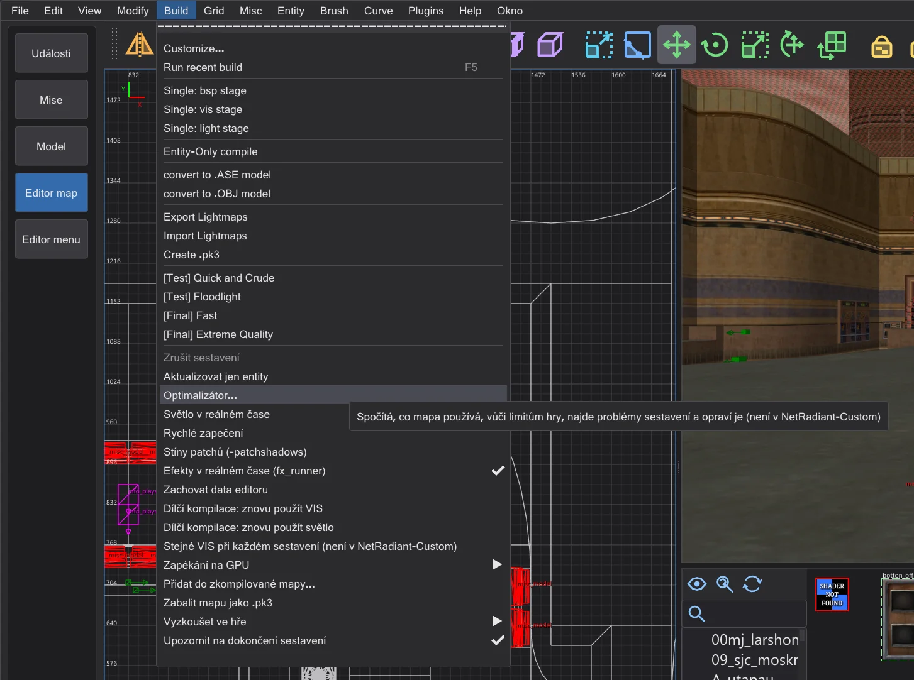
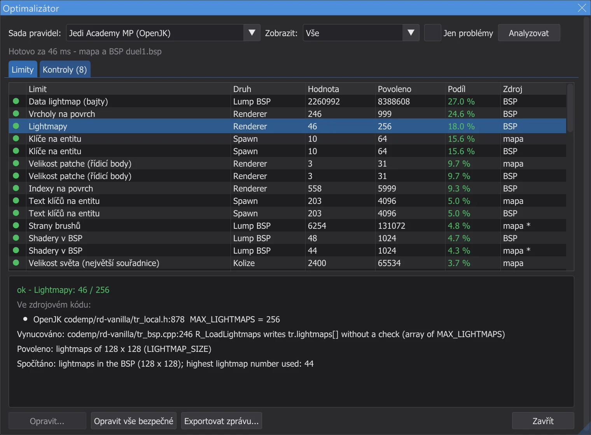
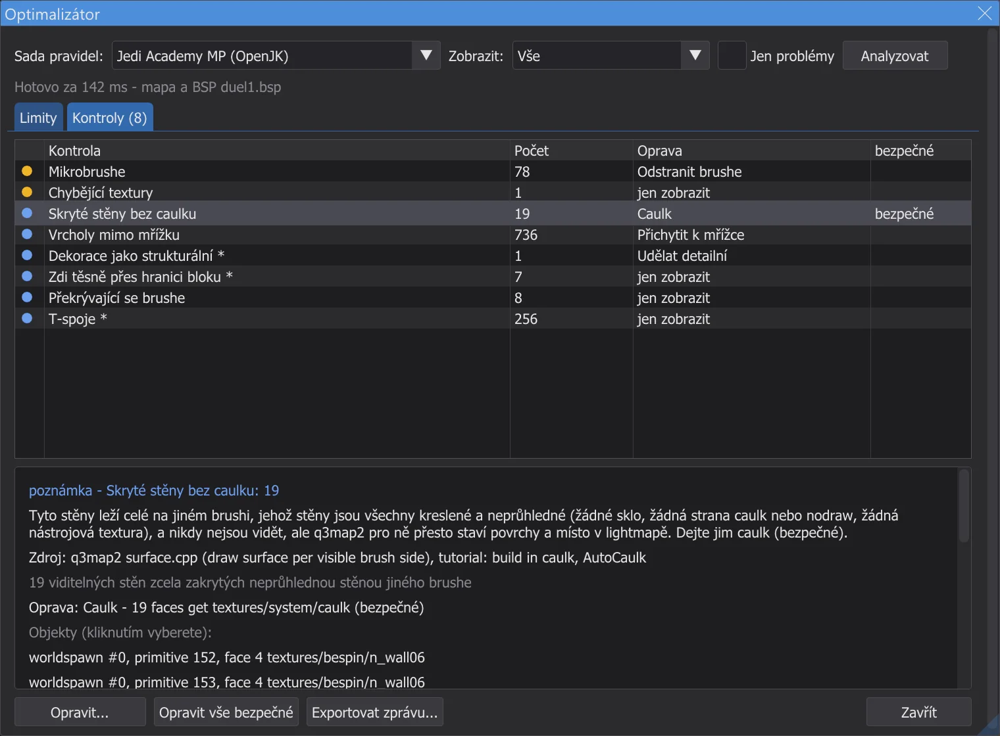
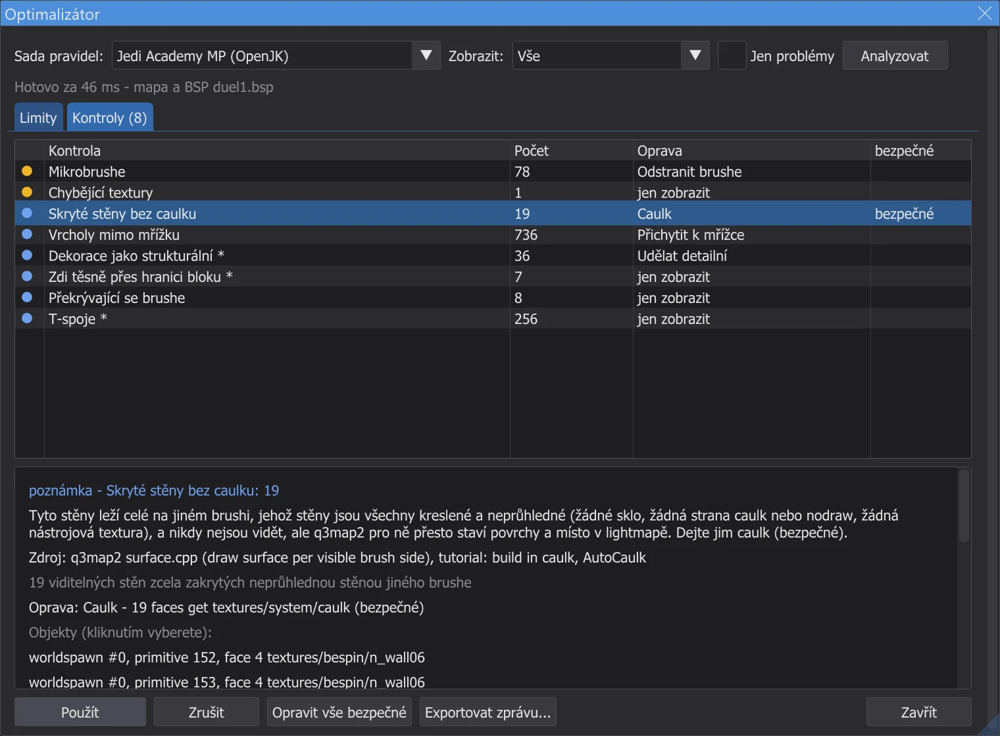
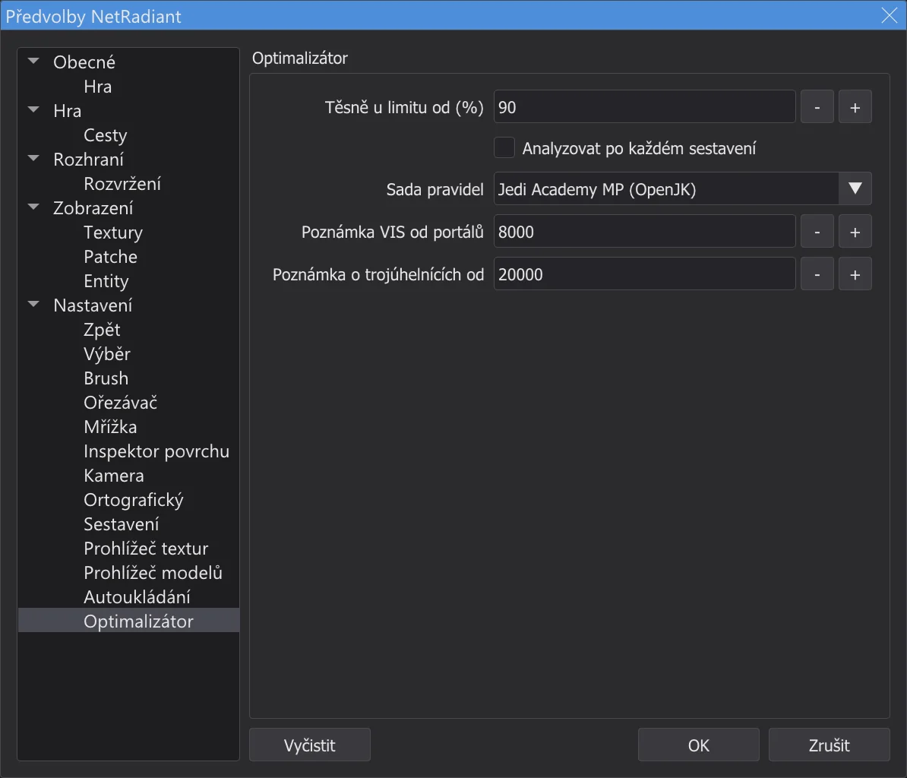

Editor map: optimalizátor a limity
Build > Optimalizátor spočítá, co mapa používá, vůči každému limitu Jedi Academy, Movie Duels a Jedi Outcast - každý limit převzatý ze zdrojového kódu enginu -, najde problémy sestavení jako úniky, skryté stěny bez caulku a patche s příliš mnoha kolizními rovinami a mnohé z nich opraví stiskem tlačítka.
Otevření optimalizátoru#

- 1
Build > Optimalizátor otevře okno Optimalizátor a analyzuje mapu na pozadí - i ty největší mapy; editor mezitím zůstane použitelný. Konzole na konci ukáže souhrn.
- 2
Sada pravidel: volí limity: Automaticky vezme hru, se kterou editor pracuje (Jedi Academy, Movie Duels nebo Jedi Outcast); zvolit lze i Jedi Academy pro více hráčů.
- 3
Byla-li mapa sestavena (viz Editor map: kompilace mapy) nebo otevřena jako zkompilovaná mapa (Editor map: otevírání a změna hotových map), analyzuje se i .bsp: mřížka světla, lightmapy, viditelnost, trojúhelníky na pohled, čára úniku poslední fáze BSP. Bez .bsp se počítá jen mapa.
- 4
Na stránce Optimalizátor v Preferences může optimalizátor běžet sám po každém sestavení; otevře se, jen když jsou problémy.
Limity#

- ok - hluboko pod limitem. těsně - od 90 % limitu (nastavitelné). přes - přes limit, který hra vynucuje: mapa se nenačte, spadne nebo o něco přijde.
- poznámka - limit formátu souboru .bsp (
MAX_MAP_*vqfiles.h), který nekontroluje engine ani q3map2. Vlastní mapy Raven několik z nich překračují, takže optimalizátor je nikdy neoznačí jako přes - jen je zaznamená. - Hodnoty označené * jsou odhady (například entity, které zůstanou po spawnu, nebo co stojí model). Sloupec Zdroj říká, zda byla hodnota spočítána v mapě, nebo v .bsp.
- Kliknutí na limit vybere největší podíly v mapě a vystředí na ně pohledy.
code/, pro více hráčů codemp/), zdrojový kód Movie Duels pro Movie Duels, OpenJK s JK2_MODE a codeJK2/ pro Jedi Outcast. Kde mod limit zvyšuje, optimalizátor stále kontroluje proti přísnější hodnotě vanilla (například 2048 místo 4096 rovin patchů). Tabulky na konci stránky uvádějí každý limit se souborem a řádkem; test karte_grenzen tyto řádky znovu čte ze zdrojů.Kontroly a opravy#

- 1
Kliknutí na nález vybere jeho objekty a vystředí na ně 2D pohledy a kameru.
- 2
Opravit ukáže, co by se změnilo; Použít to provede. Každá oprava je jeden krok Zpět a mapa se poté spočítá znovu - nález zmizí nebo se zmenší.

Náhled opravy před jejím použitím. - 3
Opravit vše bezpečné použije jen opravy označené bezpečné - ty, které nemohou změnit, jak mapa vypadá nebo se hraje - v jediném kroku zpět.
- 4
Dokud File > Open .bsp na pozadí ještě obnovuje entity misc_model, opravy a importy čekají (tlačítka jsou neaktivní, podrobnosti ukazují upozornění): změna geometrie v té době by obnovu zahodila, nebo by ji po kroku zpět vrátila jako nový krok, který vymaže historii Znovu.
- 5
Opravy, které nastavují klíč worldspawn (mřížka světla, lightmapy), se projeví při dalším sestavení; konzole to oznámí. Exportovat zprávu zapíše vše se zdroji do textového souboru.

| Kontrola | Co znamená | Oprava | Bezpečné |
|---|---|---|---|
| Únik | Mapa není utěsněná: q3map2 našel cestu od entity do prázdna (čára úniku). VIS a osvětlení potřebují uzavřený obal. Zobrazte únik pomocí File > Pointfile a mezeru uzavřete | jen zobrazit | - |
| Detailní brush na čáře úniku | Detailní brushe mapu neutěsní. Čára úniku jimi prochází - udělejte je strukturální, nebo utěsněte za nimi | Udělat strukturální | - |
| Skryté stěny bez caulku | Tyto stěny leží celé na jiném brushi, jehož stěny jsou všechny kreslené a neprůhledné (žádné sklo, žádná strana caulk nebo nodraw, žádná nástrojová textura), a nikdy nejsou vidět, ale q3map2 pro ně přesto staví povrchy a místo v lightmapě. Dejte jim caulk (bezpečné) | Caulk | bezpečné |
| Degenerované brushe | Brushe bez platného tvaru. q3map2 je zahodí; jen zaneřáďují mapu. Odstraňte je (bezpečné) | Odstranit brushe | bezpečné |
| Mikrobrushe | Brushe tenčí než jedna jednotka způsobují problémy s přesností BSP a dělení. Odstraňte je, nebo je zesilte | Odstranit brushe | - |
| Vrcholy mimo mřížku | Rohy brushů mimo celé jednotky vedou po přichycení rovin v q3map2 k prasklinám a jiskření. Přichyťte k mřížce 1 jednotky (bezpečné, pokud jde jen o šum zaokrouhlení) | Přichytit k mřížce | bezpečné |
| Hint nebo areaportál označený jako detail | Brushe hint a areaportal musí být strukturální; q3map2 varuje "Mixed detail and structural" a stejně použije strukturální. Udělejte je strukturální (bezpečné) | Udělat strukturální | bezpečné |
| Areaportál v entitě | q3map2 povoluje areaportály jen ve světě ("areaportals only allowed in world") a přeskočí je. Přesuňte brush do worldspawn | jen zobrazit | - |
| Dekorace jako strukturální | Malé, tenké nebo šikmé strukturální brushe rozdělí BSP na mnoho listů a portálů (pomalý VIS). Návrh: udělejte je detailní - ale nikdy ne brushe, které utěsňují mapu | Udělat detailní | - |
| Zdi těsně přes hranici bloku | q3map2 řeže BSP na každé hranici _blocksize (1024). Zeď sahající jen kousek přes ni přidává řezy - zarovnejte ji k hranici | jen zobrazit | - |
| Překrývající se brushe | Překrývající se brushe způsobují z-fighting a zdvojené stěny. Zdi místo překrývání spojte na pokos (Ořezávač, CSG) | jen zobrazit | - |
| T-spoje | Roh leží uvnitř hrany jiného brushe. q3map2 je opravuje dalšími vrcholy (více vrcholů na povrch); kde na tom záleží, brushe zarovnejte | jen zobrazit | - |
| Patch blízko limitů kolizí | Engine staví pro každý patch kolizní roviny a fasety; nad MAX_PATCH_PLANES (vanilla 2048) nebo MAX_FACETS se mapa nenačte. Patch rozdělte (bobToolz Split patch) | Rozdělit patch | - |
| Přetečení mřížky patche | Tento patch se dělí na více než 129 sloupců mřížky; engine zapisuje za konec své mřížky (poškození paměti). Patch rozdělte nebo zploštěte | Rozdělit patch | - |
| Clip modely | misc_model s příznaky clip nutí q3map2 stavět brush na každý trojúhelník (mnoho brushů a rovin). Několik brushů physics_clip bývá lepší | jen zobrazit | - |
| Chybějící textury | Pro tyto názvy nebyl nalezen skript shaderu ani obrázek - hra ukáže výchozí texturu. Vyberte existující textury, nebo je přidejte do modu | jen zobrazit | - |
| Brush entita bez brushů | Hra se zastaví s "SV_SetBrushModel: NULL". Dejte entitě brushe, nebo ji odstraňte | Odstranit entity | - |
| Mřížka světla poškozená | Mřížka světla je plná nebo nesouhlasí: buňky ukazují za mřížku, entity dostanou špatné nebo žádné světlo. Nastavte větší "gridsize" ve worldspawn a znovu nasvětlete | Nastavit klíč worldspawn | - |
| Příliš mnoho lightmap | Renderer pojme 256 lightmap; blízko nebo nad tím nastavte vyšší "_lightmapscale" ve worldspawn (hrubší lightmapy) a znovu nasvětlete | Nastavit klíč worldspawn | - |
| Náročný VIS | Mnoho portálů zpomaluje VIS (passage portal flow). Udělejte dekorace detailní, přidejte hint brushe, zvyšte _blocksize | jen zobrazit | - |
| Mnoho trojúhelníků na pohled (odhad) | Odhadnuto z PVS nejhoršího clusteru (bez zorného jehlanu): co by nejvýš ukázal r_speeds. Zablokujte linie pohledu zdmi, hint brushi nebo areaportály | jen zobrazit | - |
| Bod spawnu v pevné hmotě | Tento bod spawnu nebo NPC spawner leží v pevné hmotě nebo mimo mapu (žádný cluster). Přesuňte ho do hratelné oblasti | jen zobrazit | - |
| Sloučit brush modely | Brush modely jsou blízko MAX_SUBMODELS. Brush entity s přesně stejnými klíči a bez targetname se mohou stát jedním modelem | Sloučit brush modely | - |
| Model se nikdy nevykreslí (misc_model_static) | Hra vykreslí misc_model_static jen tehdy, když bod origin + (0 0 zoffset+1) leží v otevřeném prostoru. Zde leží v pevné hmotě, takže se model nikdy neobjeví (OpenJK#1358). Oprava: zoffset, který z pevné hmoty posune jen tento bod pro ořez; model zůstane, kde je | Nastavit klíč entity | - |
| common/origin místo system/origin | Jedi Academy a Jedi Outcast znají jako origin brush jen textures/system/origin. S common/origin q3map2 postaví normální brush a entita skončí v 0 0 0 (NRC#270). Oprava: nahradit texturu za system/origin | Nahradit texturu | - |
| Obrovské brushe | Velmi velké brushe - například sky box z několika obřích brushů - ztrácejí v q3map2 přesnost a mohou propouštět (GtkRadiant#271). Postavte obal z menších brushů | jen zobrazit | - |
| Světelný povrch pod pevnými brushi | q3map2 nasvětluje každý svítící povrch (láva, světelné panely) i z kopie 23 jednotek před ním (backsplash). Leží-li pevný brush blíž, objeví se toto světlo na jeho druhé straně - světlo prosvítá podlahou (GL#189, NRC#144). Odsuňte brush, zkraťte světelný povrch nebo nastavte v shaderu q3map_backsplash 0 0 | jen zobrazit | - |
| Přepínače sestavení, které tato hra nepoužije | Externí lightmapy (-external, nebo -lightmapsize jiné než 128) nefungují v Jedi Outcast (NRC#98) a v žádné hře spolu se styly světla (NRC#48). Nabídka Build takové položky odmítá; odeberte přepínač v Build > Customize | jen zobrazit | - |
| Externí lightmapy ze shaderů | Shader s q3map_lightmapSize jiným než 128 dostane externí lightmapu. V Jedi Academy a Movie Duels pak styly světla na těchto površích ztratí své vrstvy lightmapy (NRC#48, omezení q3map2 pro RBSP); Jedi Outcast externí lightmapy nenačte vůbec (NRC#98). Odeberte q3map_lightmapSize ze shaderu, nebo blízko těchto povrchů nepoužívejte styly světla (přepínatelná nebo blikající světla) | jen zobrazit | - |
Nastavení#

Těsně u limitu od (%) nastavuje, od jakého podílu se limit počítá jako těsný, Analyzovat po každém sestavení spouští optimalizátor po každém sestavení, Sada pravidel pevně nastaví sadu pravidel, Poznámka VIS od portálů a Poznámka o trojúhelnících od jsou prahy pro poznámky o VIS a trojúhelnících.
Limity každé hry#
Povoleno je hodnota, proti které optimalizátor kontroluje - o jedna menší než define tam, kde si engine sám bere jedno místo (například model světa nebo model krabice), a přísnější hodnota vanilla tam, kde ji mod zvýšil. Sloupec zdroje jmenuje každé místo: define a řádek, který hru zastaví.
Jedi Academy (OpenJK SP)
| Limit | Ve zdrojovém kódu | Povoleno | Druh | Překročeno | Zdroj (soubor:řádek) |
|---|---|---|---|---|---|
| Entity v BSP | MAX_MAP_ENTITIES = 2048 | 2048 | Lump BSP | poznámka | OpenJK code/qcommon/qfiles.h:214 MAX_MAP_ENTITIES |
| Text entit (bajty) | MAX_MAP_ENTSTRING = 262144 | 262144 | Lump BSP | poznámka | OpenJK code/qcommon/qfiles.h:215 MAX_MAP_ENTSTRING |
| Shadery v BSP | MAX_MAP_SHADERS = 1024 | 1024 | Lump BSP | poznámka | OpenJK code/qcommon/qfiles.h:216 MAX_MAP_SHADERS |
| Modely v BSP | MAX_MAP_MODELS = 1024 | 1024 | Lump BSP | poznámka | OpenJK code/qcommon/qfiles.h:212 MAX_MAP_MODELS |
| Brushe | MAX_MAP_BRUSHES = 32768 | 32768 | Lump BSP | poznámka | OpenJK code/qcommon/qfiles.h:213 MAX_MAP_BRUSHES |
| Strany brushů | MAX_MAP_BRUSHSIDES = 131072 | 131072 | Lump BSP | poznámka | OpenJK code/qcommon/qfiles.h:222 MAX_MAP_BRUSHSIDES |
| Roviny | MAX_MAP_PLANES = 131072 | 131072 | Lump BSP | poznámka | OpenJK code/qcommon/qfiles.h:220 MAX_MAP_PLANES |
| Uzly BSP | MAX_MAP_NODES = 131072 | 131072 | Lump BSP | poznámka | OpenJK code/qcommon/qfiles.h:221 MAX_MAP_NODES |
| Listy | MAX_MAP_LEAFS = 131072 | 131072 | Lump BSP | poznámka | OpenJK code/qcommon/qfiles.h:223 MAX_MAP_LEAFS |
| Povrchy listů | MAX_MAP_LEAFFACES = 131072 | 131072 | Lump BSP | poznámka | OpenJK code/qcommon/qfiles.h:224 MAX_MAP_LEAFFACES |
| Brushe listů | MAX_MAP_LEAFBRUSHES = 262144 | 262144 | Lump BSP | poznámka | OpenJK code/qcommon/qfiles.h:225 MAX_MAP_LEAFBRUSHES |
| Vykreslované povrchy | MAX_MAP_DRAW_SURFS = 131072 | 131072 | Lump BSP | poznámka | OpenJK code/qcommon/qfiles.h:233 MAX_MAP_DRAW_SURFS |
| Vykreslované vrcholy | MAX_MAP_DRAW_VERTS = 524288 | 524288 | Lump BSP | poznámka | OpenJK code/qcommon/qfiles.h:234 MAX_MAP_DRAW_VERTS |
| Vykreslované indexy | MAX_MAP_DRAW_INDEXES = 524288 | 524288 | Lump BSP | poznámka | OpenJK code/qcommon/qfiles.h:235 MAX_MAP_DRAW_INDEXES |
| Mlhy v BSP | MAX_MAP_FOGS = 256 | 256 | Lump BSP | poznámka | OpenJK code/qcommon/qfiles.h:219 MAX_MAP_FOGS |
| Data lightmap (bajty) | MAX_MAP_LIGHTING = 8388608 | 8388608 | Lump BSP | poznámka | OpenJK code/qcommon/qfiles.h:227 MAX_MAP_LIGHTING |
| Data viditelnosti (bajty) | MAX_MAP_VISIBILITY = 4194304 | 4194304 | Lump BSP | poznámka | OpenJK code/qcommon/qfiles.h:231 MAX_MAP_VISIBILITY |
| Portály | MAX_MAP_PORTALS = 131072 | 131072 | Lump BSP | poznámka | OpenJK code/qcommon/qfiles.h:226 MAX_MAP_PORTALS |
| Body mřížky světla | MAX_MAP_LIGHTGRID = 65535 | 65535 | Lump BSP | přes | OpenJK code/qcommon/qfiles.h:228 MAX_MAP_LIGHTGRID; q3map2 tools/quake3/q3map2/bspfile_rbsp.cpp:82 MAX_MAP_GRID |
| Buňky mřížky světla | MAX_MAP_LIGHTGRID_ARRAY = 1048576 | 1048576 | Lump BSP | poznámka | OpenJK code/qcommon/qfiles.h:229 MAX_MAP_LIGHTGRID_ARRAY; q3map2 tools/quake3/q3map2/q3map2.h:210 MAX_MAP_LIGHTGRID |
| Oblasti (areas) | MAX_MAP_AREAS = 256 | 256 | Lump BSP | přes | OpenJK code/qcommon/qfiles.h:218 MAX_MAP_AREAS; OpenJK code/qcommon/q_shared.h:228 MAX_MAP_AREA_BYTES; q3map2 tools/quake3/q3map2/q3map2.h:203 MAX_MAP_AREAS |
| Vrcholy na povrch | SHADER_MAX_VERTEXES = 1000 | 999 | Renderer | přes | OpenJK code/qcommon/qfiles.h:33 SHADER_MAX_VERTEXES; q3map2 tools/quake3/q3map2/games.cpp:756 |
| Indexy na povrch | SHADER_MAX_INDEXES = 6000 | 5999 | Renderer | přes | OpenJK code/qcommon/qfiles.h:34 SHADER_MAX_INDEXES |
| Lightmapy | MAX_LIGHTMAPS = 256 | 256 | Renderer | přes | OpenJK code/rd-vanilla/tr_local.h:843 MAX_LIGHTMAPS |
| Mlhy (bity řazení) | QSORT_FOGNUM_SHIFT = 30 | 30 | Renderer | přes | OpenJK code/rd-vanilla/tr_local.h:874 QSORT_FOGNUM_SHIFT; OpenJK code/rd-vanilla/tr_local.h:875 QSORT_REFENTITYNUM_SHIFT; q3map2 tools/quake3/q3map2/q3map2.h:206 MAX_RBSP_FOGS |
| Velikost patche (řídicí body) | MAX_PATCH_SIZE = 32 | 31 | Renderer | přes | OpenJK code/rd-vanilla/tr_local.h:592 MAX_PATCH_SIZE; q3map2 tools/quake3/q3map2/q3map2.h:126 MAX_PATCH_SIZE |
| Povrchy na pohled (odhad) | MAX_DRAWSURFS = 65536 | 65536 | Renderer | přes | OpenJK code/rd-vanilla/tr_local.h:847 MAX_DRAWSURFS |
| Načtené shadery | MAX_SHADERS = 8192 | 8192 | Renderer | přes | OpenJK code/rd-vanilla/tr_local.h:43 SHADERNUM_BITS; OpenJK code/rd-vanilla/tr_local.h:44 MAX_SHADERS |
| Načtené skiny | MAX_SKINS = 512 | 512 | Renderer | přes | OpenJK code/rd-vanilla/tr_local.h:844 MAX_SKINS |
| Brush modely (vč. světa) | MAX_SUBMODELS = 512 | 511 | Kolize | přes | OpenJK code/qcommon/q_shared.h:642 MAX_SUBMODELS; OpenJK code/qcommon/cm_local.h:31 BOX_MODEL_HANDLE |
| Kolizní roviny na patch | MAX_PATCH_PLANES = 4096 | 2048 | Kolize | přes | OpenJK code/qcommon/cm_patch.h:65 MAX_PATCH_PLANES |
| Kolizní fasety na patch | MAX_FACETS = 1024 | 1024 | Kolize | přes | OpenJK code/qcommon/cm_patch.h:64 MAX_FACETS |
| Řídicí body na patch | MAX_PATCH_VERTS = 1024 | 1024 | Kolize | přes | OpenJK code/qcommon/cm_load.cpp:527 MAX_PATCH_VERTS |
| Velikost světa (největší souřadnice) | MAX_MAP_BOUNDS = 65535 | 65534 | Kolize | přes | OpenJK code/qcommon/cm_polylib.h:44 MAX_MAP_BOUNDS; OpenJK code/qcommon/q_shared.h:802 MAX_WORLD_COORD; q3map2 tools/quake3/common/maxworld.h:4 MAX_WORLD_COORD |
| Entity po spawnu | MAX_GENTITIES = 1024 | 1021 | Za běhu | přes | OpenJK code/qcommon/q_shared.h:621 GENTITYNUM_BITS; OpenJK code/qcommon/q_shared.h:618 MAX_CLIENTS |
| misc_model_static (cgame misc ents) | MAX_MISC_ENTS = 2000 | 2000 | Za běhu | přes | OpenJK code/cgame/cg_main.cpp:1949 MAX_MISC_ENTS |
| Modely (configstrings) | MAX_MODELS = 256 | 255 | Za běhu | přes | OpenJK code/qcommon/q_shared.h:632 MAX_MODELS |
| Zvuky (configstrings) | MAX_SOUNDS = 380 | 379 | Za běhu | přes | OpenJK code/qcommon/q_shared.h:637 MAX_SOUNDS |
| Efekty (configstrings) | MAX_FX = 128 | 127 | Za běhu | přes | OpenJK code/qcommon/q_shared.h:644 MAX_FX |
| Efekty světa (déšť, sníh, vítr) | MAX_WORLD_FX = 66 | 65 | Za běhu | přes | OpenJK code/qcommon/q_shared.h:649 MAX_WORLD_FX |
| Text configstringů (dolní mez) | MAX_GAMESTATE_CHARS = 16000 | 16000 | Za běhu | přes | OpenJK code/qcommon/q_shared.h:730 MAX_GAMESTATE_CHARS |
| Soubory ROFF | MAX_ROFFS = 128 | 128 | Za běhu | přes | OpenJK code/game/g_roff.h:34 MAX_ROFFS |
| Modely NPC na úroveň | MAX_MODELS_PER_LEVEL = 60 | 60 | Za běhu | přes | OpenJK code/game/NPC_stats.cpp:43 MAX_MODELS_PER_LEVEL |
| Dílčí BSP (misc_bsp) | MAX_SUB_BSP = 32 | 31 | Za běhu | přes | OpenJK code/qcommon/q_shared.h:640 MAX_SUB_BSP |
| Klíče na entitu | MAX_SPAWN_VARS = 64 | 64 | Spawn | přes | OpenJK code/game/g_local.h:221 MAX_SPAWN_VARS |
| Text klíčů na entitu | MAX_SPAWN_VARS_CHARS = 2048 | 2048 | Spawn | přes | OpenJK code/game/g_local.h:222 MAX_SPAWN_VARS_CHARS |
| Přepínatelné styly světla | MAX_SWITCHED_LIGHTS = 32 | 32 | Kompilátor (q3map2) | přes | q3map2 tools/quake3/q3map2/q3map2.h:193 MAX_SWITCHED_LIGHTS |
| Data viditelnosti (q3map2) | MAX_MAP_VISIBILITY = 33554440 | 33554440 | Kompilátor (q3map2) | přes | q3map2 tools/quake3/q3map2/q3map2.h:147 VIS_HEADER_SIZE; q3map2 tools/quake3/q3map2/q3map2.h:211 MAX_MAP_VISCLUSTERS; q3map2 tools/quake3/q3map2/q3map2.h:212 MAX_MAP_VISIBILITY |
Jedi Academy MP (OpenJK)
| Limit | Ve zdrojovém kódu | Povoleno | Druh | Překročeno | Zdroj (soubor:řádek) |
|---|---|---|---|---|---|
| Entity v BSP | MAX_MAP_ENTITIES = 2048 | 2048 | Lump BSP | poznámka | OpenJK codemp/qcommon/qfiles.h:316 MAX_MAP_ENTITIES |
| Text entit (bajty) | MAX_MAP_ENTSTRING = 262144 | 262144 | Lump BSP | poznámka | OpenJK codemp/qcommon/qfiles.h:317 MAX_MAP_ENTSTRING |
| Shadery v BSP | MAX_MAP_SHADERS = 1024 | 1024 | Lump BSP | poznámka | OpenJK codemp/qcommon/qfiles.h:318 MAX_MAP_SHADERS |
| Modely v BSP | MAX_MAP_MODELS = 1024 | 1024 | Lump BSP | poznámka | OpenJK codemp/qcommon/qfiles.h:314 MAX_MAP_MODELS |
| Brushe | MAX_MAP_BRUSHES = 32768 | 32768 | Lump BSP | poznámka | OpenJK codemp/qcommon/qfiles.h:315 MAX_MAP_BRUSHES |
| Strany brushů | MAX_MAP_BRUSHSIDES = 131072 | 131072 | Lump BSP | poznámka | OpenJK codemp/qcommon/qfiles.h:324 MAX_MAP_BRUSHSIDES |
| Roviny | MAX_MAP_PLANES = 131072 | 131072 | Lump BSP | poznámka | OpenJK codemp/qcommon/qfiles.h:322 MAX_MAP_PLANES |
| Uzly BSP | MAX_MAP_NODES = 131072 | 131072 | Lump BSP | poznámka | OpenJK codemp/qcommon/qfiles.h:323 MAX_MAP_NODES |
| Listy | MAX_MAP_LEAFS = 131072 | 131072 | Lump BSP | poznámka | OpenJK codemp/qcommon/qfiles.h:325 MAX_MAP_LEAFS |
| Povrchy listů | MAX_MAP_LEAFFACES = 131072 | 131072 | Lump BSP | poznámka | OpenJK codemp/qcommon/qfiles.h:326 MAX_MAP_LEAFFACES |
| Brushe listů | MAX_MAP_LEAFBRUSHES = 262144 | 262144 | Lump BSP | poznámka | OpenJK codemp/qcommon/qfiles.h:327 MAX_MAP_LEAFBRUSHES |
| Vykreslované povrchy | MAX_MAP_DRAW_SURFS = 131072 | 131072 | Lump BSP | poznámka | OpenJK codemp/qcommon/qfiles.h:334 MAX_MAP_DRAW_SURFS |
| Vykreslované vrcholy | MAX_MAP_DRAW_VERTS = 524288 | 524288 | Lump BSP | poznámka | OpenJK codemp/qcommon/qfiles.h:335 MAX_MAP_DRAW_VERTS |
| Vykreslované indexy | MAX_MAP_DRAW_INDEXES = 524288 | 524288 | Lump BSP | poznámka | OpenJK codemp/qcommon/qfiles.h:336 MAX_MAP_DRAW_INDEXES |
| Mlhy v BSP | MAX_MAP_FOGS = 256 | 256 | Lump BSP | poznámka | OpenJK codemp/qcommon/qfiles.h:321 MAX_MAP_FOGS |
| Data lightmap (bajty) | MAX_MAP_LIGHTING = 8388608 | 8388608 | Lump BSP | poznámka | OpenJK codemp/qcommon/qfiles.h:329 MAX_MAP_LIGHTING |
| Data viditelnosti (bajty) | MAX_MAP_VISIBILITY = 6291456 | 6291456 | Lump BSP | poznámka | OpenJK codemp/qcommon/qfiles.h:332 MAX_MAP_VISIBILITY |
| Portály | MAX_MAP_PORTALS = 131072 | 131072 | Lump BSP | poznámka | OpenJK codemp/qcommon/qfiles.h:328 MAX_MAP_PORTALS |
| Body mřížky světla | MAX_MAP_LIGHTGRID = 65535 | 65535 | Lump BSP | přes | OpenJK codemp/qcommon/qfiles.h:330 MAX_MAP_LIGHTGRID; q3map2 tools/quake3/q3map2/bspfile_rbsp.cpp:82 MAX_MAP_GRID |
| Buňky mřížky světla | MAX_MAP_LIGHTGRID_ARRAY = 1048576 | 1048576 | Lump BSP | poznámka | OpenJK codemp/qcommon/qfiles.h:331 MAX_MAP_LIGHTGRID_ARRAY; q3map2 tools/quake3/q3map2/q3map2.h:210 MAX_MAP_LIGHTGRID |
| Oblasti (areas) | MAX_MAP_AREAS = 256 | 256 | Lump BSP | přes | OpenJK codemp/qcommon/qfiles.h:320 MAX_MAP_AREAS; OpenJK codemp/qcommon/q_shared.h:222 MAX_MAP_AREA_BYTES; q3map2 tools/quake3/q3map2/q3map2.h:203 MAX_MAP_AREAS |
| Vrcholy na povrch | SHADER_MAX_VERTEXES = 1000 | 999 | Renderer | přes | OpenJK codemp/qcommon/qfiles.h:34 SHADER_MAX_VERTEXES; q3map2 tools/quake3/q3map2/games.cpp:756 |
| Indexy na povrch | SHADER_MAX_INDEXES = 6000 | 5999 | Renderer | přes | OpenJK codemp/qcommon/qfiles.h:35 SHADER_MAX_INDEXES |
| Lightmapy | MAX_LIGHTMAPS = 256 | 256 | Renderer | přes | OpenJK codemp/rd-vanilla/tr_local.h:878 MAX_LIGHTMAPS |
| Mlhy (bity řazení) | QSORT_FOGNUM_SHIFT = 30 | 30 | Renderer | přes | OpenJK codemp/rd-vanilla/tr_local.h:897 QSORT_FOGNUM_SHIFT; OpenJK codemp/rd-vanilla/tr_local.h:898 QSORT_REFENTITYNUM_SHIFT; q3map2 tools/quake3/q3map2/q3map2.h:206 MAX_RBSP_FOGS |
| Velikost patche (řídicí body) | MAX_PATCH_SIZE = 32 | 31 | Renderer | přes | OpenJK codemp/rd-vanilla/tr_local.h:648 MAX_PATCH_SIZE; q3map2 tools/quake3/q3map2/q3map2.h:126 MAX_PATCH_SIZE |
| Povrchy na pohled (odhad) | MAX_DRAWSURFS = 65536 | 65536 | Renderer | přes | OpenJK codemp/rd-vanilla/tr_local.h:882 MAX_DRAWSURFS |
| Načtené shadery | MAX_SHADERS = 16384 | 16384 | Renderer | přes | OpenJK codemp/rd-vanilla/tr_local.h:40 SHADERNUM_BITS; OpenJK codemp/rd-vanilla/tr_local.h:41 MAX_SHADERS |
| Načtené skiny | MAX_SKINS = 1024 | 1024 | Renderer | přes | OpenJK codemp/rd-vanilla/tr_local.h:879 MAX_SKINS |
| Brush modely (vč. světa) | MAX_SUBMODELS = 512 | 510 | Kolize | přes | OpenJK codemp/qcommon/cm_local.h:30 MAX_SUBMODELS; OpenJK codemp/qcommon/cm_local.h:31 BOX_MODEL_HANDLE |
| Kolizní roviny na patch | MAX_PATCH_PLANES = 4096 | 2048 | Kolize | přes | OpenJK codemp/qcommon/cm_patch.h:67 MAX_PATCH_PLANES |
| Kolizní fasety na patch | MAX_FACETS = 1024 | 1024 | Kolize | přes | OpenJK codemp/qcommon/cm_patch.h:66 MAX_FACETS |
| Řídicí body na patch | MAX_PATCH_VERTS = 1024 | 1024 | Kolize | přes | OpenJK codemp/qcommon/cm_load.cpp:519 MAX_PATCH_VERTS |
| Velikost světa (největší souřadnice) | MAX_MAP_BOUNDS = 65535 | 65534 | Kolize | přes | OpenJK codemp/qcommon/cm_polylib.h:44 MAX_MAP_BOUNDS; OpenJK codemp/qcommon/q_shared.h:54 MAX_WORLD_COORD; q3map2 tools/quake3/common/maxworld.h:4 MAX_WORLD_COORD |
| Entity po spawnu | MAX_GENTITIES = 1024 | 990 | Za běhu | přes | OpenJK codemp/qcommon/q_shared.h:895 GENTITYNUM_BITS; OpenJK codemp/qcommon/q_shared.h:890 MAX_CLIENTS |
| Modely (configstrings) | MAX_MODELS = 512 | 511 | Za běhu | přes | OpenJK codemp/qcommon/q_shared.h:920 MAX_MODELS |
| Zvuky (configstrings) | MAX_SOUNDS = 256 | 255 | Za běhu | přes | OpenJK codemp/qcommon/q_shared.h:921 MAX_SOUNDS |
| Efekty (configstrings) | MAX_FX = 64 | 63 | Za běhu | přes | OpenJK codemp/qcommon/q_shared.h:923 MAX_FX |
| Text configstringů (dolní mez) | MAX_GAMESTATE_CHARS = 16000 | 16000 | Za běhu | přes | OpenJK codemp/qcommon/q_shared.h:946 MAX_GAMESTATE_CHARS |
| Dílčí BSP (misc_bsp) | MAX_SUB_BSP = 32 | 32 | Za běhu | přes | OpenJK codemp/qcommon/q_shared.h:925 MAX_SUB_BSP |
| Klíče na entitu | MAX_SPAWN_VARS = 64 | 64 | Spawn | přes | OpenJK codemp/game/bg_public.h:36 MAX_SPAWN_VARS |
| Text klíčů na entitu | MAX_SPAWN_VARS_CHARS = 4096 | 4096 | Spawn | přes | OpenJK codemp/game/bg_public.h:37 MAX_SPAWN_VARS_CHARS |
| Přepínatelné styly světla | MAX_SWITCHED_LIGHTS = 32 | 32 | Kompilátor (q3map2) | přes | q3map2 tools/quake3/q3map2/q3map2.h:193 MAX_SWITCHED_LIGHTS |
| Data viditelnosti (q3map2) | MAX_MAP_VISIBILITY = 33554440 | 33554440 | Kompilátor (q3map2) | přes | q3map2 tools/quake3/q3map2/q3map2.h:147 VIS_HEADER_SIZE; q3map2 tools/quake3/q3map2/q3map2.h:211 MAX_MAP_VISCLUSTERS; q3map2 tools/quake3/q3map2/q3map2.h:212 MAX_MAP_VISIBILITY |
Movie Duels
| Limit | Ve zdrojovém kódu | Povoleno | Druh | Překročeno | Zdroj (soubor:řádek) |
|---|---|---|---|---|---|
| Entity v BSP | MAX_MAP_ENTITIES = 2048 | 2048 | Lump BSP | poznámka | MovieDuels code/qcommon/qfiles.h:321 MAX_MAP_ENTITIES |
| Text entit (bajty) | MAX_MAP_ENTSTRING = 262144 | 262144 | Lump BSP | poznámka | MovieDuels code/qcommon/qfiles.h:322 MAX_MAP_ENTSTRING |
| Shadery v BSP | MAX_MAP_SHADERS = 1024 | 1024 | Lump BSP | poznámka | MovieDuels code/qcommon/qfiles.h:323 MAX_MAP_SHADERS |
| Modely v BSP | MAX_MAP_MODELS = 1024 | 1024 | Lump BSP | poznámka | MovieDuels code/qcommon/qfiles.h:319 MAX_MAP_MODELS |
| Brushe | MAX_MAP_BRUSHES = 32768 | 32768 | Lump BSP | poznámka | MovieDuels code/qcommon/qfiles.h:320 MAX_MAP_BRUSHES |
| Strany brushů | MAX_MAP_BRUSHSIDES = 131072 | 131072 | Lump BSP | poznámka | MovieDuels code/qcommon/qfiles.h:329 MAX_MAP_BRUSHSIDES |
| Roviny | MAX_MAP_PLANES = 131072 | 131072 | Lump BSP | poznámka | MovieDuels code/qcommon/qfiles.h:327 MAX_MAP_PLANES |
| Uzly BSP | MAX_MAP_NODES = 131072 | 131072 | Lump BSP | poznámka | MovieDuels code/qcommon/qfiles.h:328 MAX_MAP_NODES |
| Listy | MAX_MAP_LEAFS = 131072 | 131072 | Lump BSP | poznámka | MovieDuels code/qcommon/qfiles.h:330 MAX_MAP_LEAFS |
| Povrchy listů | MAX_MAP_LEAFFACES = 131072 | 131072 | Lump BSP | poznámka | MovieDuels code/qcommon/qfiles.h:331 MAX_MAP_LEAFFACES |
| Brushe listů | MAX_MAP_LEAFBRUSHES = 262144 | 262144 | Lump BSP | poznámka | MovieDuels code/qcommon/qfiles.h:332 MAX_MAP_LEAFBRUSHES |
| Vykreslované povrchy | MAX_MAP_DRAW_SURFS = 131072 | 131072 | Lump BSP | poznámka | MovieDuels code/qcommon/qfiles.h:340 MAX_MAP_DRAW_SURFS |
| Vykreslované vrcholy | MAX_MAP_DRAW_VERTS = 524288 | 524288 | Lump BSP | poznámka | MovieDuels code/qcommon/qfiles.h:341 MAX_MAP_DRAW_VERTS |
| Vykreslované indexy | MAX_MAP_DRAW_INDEXES = 524288 | 524288 | Lump BSP | poznámka | MovieDuels code/qcommon/qfiles.h:342 MAX_MAP_DRAW_INDEXES |
| Mlhy v BSP | MAX_MAP_FOGS = 256 | 256 | Lump BSP | poznámka | MovieDuels code/qcommon/qfiles.h:326 MAX_MAP_FOGS |
| Data lightmap (bajty) | MAX_MAP_LIGHTING = 8388608 | 8388608 | Lump BSP | poznámka | MovieDuels code/qcommon/qfiles.h:334 MAX_MAP_LIGHTING |
| Data viditelnosti (bajty) | MAX_MAP_VISIBILITY = 4194304 | 4194304 | Lump BSP | poznámka | MovieDuels code/qcommon/qfiles.h:338 MAX_MAP_VISIBILITY |
| Portály | MAX_MAP_PORTALS = 131072 | 131072 | Lump BSP | poznámka | MovieDuels code/qcommon/qfiles.h:333 MAX_MAP_PORTALS |
| Body mřížky světla | MAX_MAP_LIGHTGRID = 65535 | 65535 | Lump BSP | přes | MovieDuels code/qcommon/qfiles.h:335 MAX_MAP_LIGHTGRID; q3map2 tools/quake3/q3map2/bspfile_rbsp.cpp:82 MAX_MAP_GRID |
| Buňky mřížky světla | MAX_MAP_LIGHTGRID_ARRAY = 1048576 | 1048576 | Lump BSP | poznámka | MovieDuels code/qcommon/qfiles.h:336 MAX_MAP_LIGHTGRID_ARRAY; q3map2 tools/quake3/q3map2/q3map2.h:210 MAX_MAP_LIGHTGRID |
| Oblasti (areas) | MAX_MAP_AREAS = 256 | 256 | Lump BSP | přes | MovieDuels code/qcommon/qfiles.h:325 MAX_MAP_AREAS; MovieDuels code/qcommon/q_shared.h:222 MAX_MAP_AREA_BYTES; q3map2 tools/quake3/q3map2/q3map2.h:203 MAX_MAP_AREAS |
| Vrcholy na povrch | SHADER_MAX_VERTEXES = 1000 | 999 | Renderer | přes | MovieDuels code/qcommon/qfiles.h:33 SHADER_MAX_VERTEXES; q3map2 tools/quake3/q3map2/games.cpp:756 |
| Indexy na povrch | SHADER_MAX_INDEXES = 6000 | 5999 | Renderer | přes | MovieDuels code/qcommon/qfiles.h:34 SHADER_MAX_INDEXES |
| Lightmapy | MAX_LIGHTMAPS = 256 | 256 | Renderer | přes | MovieDuels code/rd-vanilla/tr_local.h:827 MAX_LIGHTMAPS |
| Mlhy (bity řazení) | QSORT_FOGNUM_SHIFT = 30 | 30 | Renderer | přes | MovieDuels code/rd-vanilla/tr_local.h:857 QSORT_FOGNUM_SHIFT; MovieDuels code/rd-vanilla/tr_local.h:858 QSORT_REFENTITYNUM_SHIFT; q3map2 tools/quake3/q3map2/q3map2.h:206 MAX_RBSP_FOGS |
| Velikost patche (řídicí body) | MAX_PATCH_SIZE = 32 | 31 | Renderer | přes | MovieDuels code/rd-vanilla/tr_local.h:576 MAX_PATCH_SIZE; q3map2 tools/quake3/q3map2/q3map2.h:126 MAX_PATCH_SIZE |
| Povrchy na pohled (odhad) | MAX_DRAWSURFS = 65536 | 65536 | Renderer | přes | MovieDuels code/rd-vanilla/tr_local.h:830 MAX_DRAWSURFS |
| Načtené shadery | MAX_SHADERS = 8192 | 8192 | Renderer | přes | MovieDuels code/rd-vanilla/tr_local.h:42 SHADERNUM_BITS; MovieDuels code/rd-vanilla/tr_local.h:43 MAX_SHADERS |
| Načtené skiny | MAX_SKINS = 1024 | 1024 | Renderer | přes | MovieDuels code/rd-vanilla/tr_local.h:828 MAX_SKINS |
| Brush modely (vč. světa) | MAX_SUBMODELS = 512 | 511 | Kolize | přes | MovieDuels code/qcommon/q_shared.h:684 MAX_SUBMODELS; MovieDuels code/qcommon/cm_local.h:31 BOX_MODEL_HANDLE |
| Kolizní roviny na patch | MAX_PATCH_PLANES = 8192 | 8192 | Kolize | přes | MovieDuels code/qcommon/cm_patch.h:62 MAX_PATCH_PLANES |
| Kolizní fasety na patch | MAX_FACETS = 4096 | 4096 | Kolize | přes | MovieDuels code/qcommon/cm_patch.h:61 MAX_FACETS |
| Řídicí body na patch | MAX_PATCH_VERTS = 1024 | 1024 | Kolize | přes | MovieDuels code/qcommon/cm_load.cpp:545 MAX_PATCH_VERTS |
| Velikost světa (největší souřadnice) | MAX_MAP_BOUNDS = 65535 | 65534 | Kolize | přes | MovieDuels code/qcommon/cm_polylib.h:44 MAX_MAP_BOUNDS; MovieDuels code/qcommon/q_shared.h:924 MAX_WORLD_COORD; q3map2 tools/quake3/common/maxworld.h:4 MAX_WORLD_COORD |
| Entity po spawnu | MAX_GENTITIES = 4096 | 4093 | Za běhu | přes | MovieDuels code/qcommon/q_shared.h:668 GENTITYNUM_BITS; MovieDuels code/qcommon/q_shared.h:665 MAX_CLIENTS |
| misc_model_static (cgame misc ents) | MAX_MISC_ENTS = 2000 | 2000 | Za běhu | přes | MovieDuels code/cgame/cg_main.cpp:3147 MAX_MISC_ENTS |
| Modely (configstrings) | MAX_MODELS = 512 | 511 | Za běhu | přes | MovieDuels code/qcommon/q_shared.h:678 MAX_MODELS |
| Zvuky (configstrings) | MAX_SOUNDS = 512 | 511 | Za běhu | přes | MovieDuels code/qcommon/q_shared.h:680 MAX_SOUNDS |
| Efekty (configstrings) | MAX_FX = 256 | 255 | Za běhu | přes | MovieDuels code/qcommon/q_shared.h:686 MAX_FX |
| Efekty světa (déšť, sníh, vítr) | MAX_WORLD_FX = 128 | 127 | Za běhu | přes | MovieDuels code/qcommon/q_shared.h:693 MAX_WORLD_FX |
| Text configstringů (dolní mez) | MAX_GAMESTATE_CHARS = 32000 | 32000 | Za běhu | přes | MovieDuels code/qcommon/q_shared.h:769 MAX_GAMESTATE_CHARS |
| Soubory ROFF | MAX_ROFFS = 128 | 128 | Za běhu | přes | MovieDuels code/game/g_roff.h:32 MAX_ROFFS |
| Modely NPC na úroveň | MAX_MODELS_PER_LEVEL = 120 | 120 | Za běhu | přes | MovieDuels code/game/NPC_stats.cpp:66 MAX_MODELS_PER_LEVEL |
| Dílčí BSP (misc_bsp) | MAX_SUB_BSP = 32 | 31 | Za běhu | přes | MovieDuels code/qcommon/q_shared.h:682 MAX_SUB_BSP |
| Klíče na entitu | MAX_SPAWN_VARS = 64 | 64 | Spawn | přes | MovieDuels code/game/g_local.h:245 MAX_SPAWN_VARS |
| Text klíčů na entitu | MAX_SPAWN_VARS_CHARS = 2048 | 2048 | Spawn | přes | MovieDuels code/game/g_local.h:246 MAX_SPAWN_VARS_CHARS |
| Přepínatelné styly světla | MAX_SWITCHED_LIGHTS = 32 | 32 | Kompilátor (q3map2) | přes | q3map2 tools/quake3/q3map2/q3map2.h:193 MAX_SWITCHED_LIGHTS |
| Data viditelnosti (q3map2) | MAX_MAP_VISIBILITY = 33554440 | 33554440 | Kompilátor (q3map2) | přes | q3map2 tools/quake3/q3map2/q3map2.h:147 VIS_HEADER_SIZE; q3map2 tools/quake3/q3map2/q3map2.h:211 MAX_MAP_VISCLUSTERS; q3map2 tools/quake3/q3map2/q3map2.h:212 MAX_MAP_VISIBILITY |
Jedi Outcast (OpenJK JK2_MODE)
| Limit | Ve zdrojovém kódu | Povoleno | Druh | Překročeno | Zdroj (soubor:řádek) |
|---|---|---|---|---|---|
| Entity v BSP | MAX_MAP_ENTITIES = 2048 | 2048 | Lump BSP | poznámka | OpenJK code/qcommon/qfiles.h:214 MAX_MAP_ENTITIES |
| Text entit (bajty) | MAX_MAP_ENTSTRING = 262144 | 262144 | Lump BSP | poznámka | OpenJK code/qcommon/qfiles.h:215 MAX_MAP_ENTSTRING |
| Shadery v BSP | MAX_MAP_SHADERS = 1024 | 1024 | Lump BSP | poznámka | OpenJK code/qcommon/qfiles.h:216 MAX_MAP_SHADERS |
| Modely v BSP | MAX_MAP_MODELS = 1024 | 1024 | Lump BSP | poznámka | OpenJK code/qcommon/qfiles.h:212 MAX_MAP_MODELS |
| Brushe | MAX_MAP_BRUSHES = 32768 | 32768 | Lump BSP | poznámka | OpenJK code/qcommon/qfiles.h:213 MAX_MAP_BRUSHES |
| Strany brushů | MAX_MAP_BRUSHSIDES = 131072 | 131072 | Lump BSP | poznámka | OpenJK code/qcommon/qfiles.h:222 MAX_MAP_BRUSHSIDES |
| Roviny | MAX_MAP_PLANES = 131072 | 131072 | Lump BSP | poznámka | OpenJK code/qcommon/qfiles.h:220 MAX_MAP_PLANES |
| Uzly BSP | MAX_MAP_NODES = 131072 | 131072 | Lump BSP | poznámka | OpenJK code/qcommon/qfiles.h:221 MAX_MAP_NODES |
| Listy | MAX_MAP_LEAFS = 131072 | 131072 | Lump BSP | poznámka | OpenJK code/qcommon/qfiles.h:223 MAX_MAP_LEAFS |
| Povrchy listů | MAX_MAP_LEAFFACES = 131072 | 131072 | Lump BSP | poznámka | OpenJK code/qcommon/qfiles.h:224 MAX_MAP_LEAFFACES |
| Brushe listů | MAX_MAP_LEAFBRUSHES = 262144 | 262144 | Lump BSP | poznámka | OpenJK code/qcommon/qfiles.h:225 MAX_MAP_LEAFBRUSHES |
| Vykreslované povrchy | MAX_MAP_DRAW_SURFS = 131072 | 131072 | Lump BSP | poznámka | OpenJK code/qcommon/qfiles.h:233 MAX_MAP_DRAW_SURFS |
| Vykreslované vrcholy | MAX_MAP_DRAW_VERTS = 524288 | 524288 | Lump BSP | poznámka | OpenJK code/qcommon/qfiles.h:234 MAX_MAP_DRAW_VERTS |
| Vykreslované indexy | MAX_MAP_DRAW_INDEXES = 524288 | 524288 | Lump BSP | poznámka | OpenJK code/qcommon/qfiles.h:235 MAX_MAP_DRAW_INDEXES |
| Mlhy v BSP | MAX_MAP_FOGS = 256 | 256 | Lump BSP | poznámka | OpenJK code/qcommon/qfiles.h:219 MAX_MAP_FOGS |
| Data lightmap (bajty) | MAX_MAP_LIGHTING = 8388608 | 8388608 | Lump BSP | poznámka | OpenJK code/qcommon/qfiles.h:227 MAX_MAP_LIGHTING |
| Data viditelnosti (bajty) | MAX_MAP_VISIBILITY = 4194304 | 4194304 | Lump BSP | poznámka | OpenJK code/qcommon/qfiles.h:231 MAX_MAP_VISIBILITY |
| Portály | MAX_MAP_PORTALS = 131072 | 131072 | Lump BSP | poznámka | OpenJK code/qcommon/qfiles.h:226 MAX_MAP_PORTALS |
| Body mřížky světla | MAX_MAP_LIGHTGRID = 65535 | 65535 | Lump BSP | přes | OpenJK code/qcommon/qfiles.h:228 MAX_MAP_LIGHTGRID; q3map2 tools/quake3/q3map2/bspfile_rbsp.cpp:82 MAX_MAP_GRID |
| Buňky mřížky světla | MAX_MAP_LIGHTGRID_ARRAY = 1048576 | 1048576 | Lump BSP | poznámka | OpenJK code/qcommon/qfiles.h:229 MAX_MAP_LIGHTGRID_ARRAY; q3map2 tools/quake3/q3map2/q3map2.h:210 MAX_MAP_LIGHTGRID |
| Oblasti (areas) | MAX_MAP_AREAS = 256 | 256 | Lump BSP | přes | OpenJK code/qcommon/qfiles.h:218 MAX_MAP_AREAS; OpenJK code/qcommon/q_shared.h:228 MAX_MAP_AREA_BYTES; q3map2 tools/quake3/q3map2/q3map2.h:203 MAX_MAP_AREAS |
| Vrcholy na povrch | SHADER_MAX_VERTEXES = 1000 | 999 | Renderer | přes | OpenJK code/qcommon/qfiles.h:33 SHADER_MAX_VERTEXES; q3map2 tools/quake3/q3map2/games.cpp:756 |
| Indexy na povrch | SHADER_MAX_INDEXES = 6000 | 5999 | Renderer | přes | OpenJK code/qcommon/qfiles.h:34 SHADER_MAX_INDEXES |
| Lightmapy | MAX_LIGHTMAPS = 256 | 256 | Renderer | přes | OpenJK code/rd-vanilla/tr_local.h:843 MAX_LIGHTMAPS |
| Mlhy (bity řazení) | QSORT_FOGNUM_SHIFT = 30 | 30 | Renderer | přes | OpenJK code/rd-vanilla/tr_local.h:874 QSORT_FOGNUM_SHIFT; OpenJK code/rd-vanilla/tr_local.h:875 QSORT_REFENTITYNUM_SHIFT; q3map2 tools/quake3/q3map2/q3map2.h:206 MAX_RBSP_FOGS |
| Velikost patche (řídicí body) | MAX_PATCH_SIZE = 32 | 31 | Renderer | přes | OpenJK code/rd-vanilla/tr_local.h:592 MAX_PATCH_SIZE; q3map2 tools/quake3/q3map2/q3map2.h:126 MAX_PATCH_SIZE |
| Povrchy na pohled (odhad) | MAX_DRAWSURFS = 65536 | 65536 | Renderer | přes | OpenJK code/rd-vanilla/tr_local.h:847 MAX_DRAWSURFS |
| Načtené shadery | MAX_SHADERS = 8192 | 8192 | Renderer | přes | OpenJK code/rd-vanilla/tr_local.h:43 SHADERNUM_BITS; OpenJK code/rd-vanilla/tr_local.h:44 MAX_SHADERS |
| Načtené skiny | MAX_SKINS = 512 | 512 | Renderer | přes | OpenJK code/rd-vanilla/tr_local.h:844 MAX_SKINS |
| Brush modely (vč. světa) | MAX_SUBMODELS = 512 | 511 | Kolize | přes | OpenJK code/qcommon/q_shared.h:642 MAX_SUBMODELS; OpenJK code/qcommon/cm_local.h:31 BOX_MODEL_HANDLE |
| Kolizní roviny na patch | MAX_PATCH_PLANES = 4096 | 2048 | Kolize | přes | OpenJK code/qcommon/cm_patch.h:65 MAX_PATCH_PLANES - otevřené: žádný zdrojový kód Jedi Outcast - ověřeno proti hodnotě Jedi Academy |
| Kolizní fasety na patch | MAX_FACETS = 1024 | 1024 | Kolize | přes | OpenJK code/qcommon/cm_patch.h:64 MAX_FACETS |
| Řídicí body na patch | MAX_PATCH_VERTS = 1024 | 1024 | Kolize | přes | OpenJK code/qcommon/cm_load.cpp:527 MAX_PATCH_VERTS |
| Velikost světa (největší souřadnice) | MAX_MAP_BOUNDS = 65535 | 65534 | Kolize | přes | OpenJK code/qcommon/cm_polylib.h:44 MAX_MAP_BOUNDS; OpenJK code/qcommon/q_shared.h:802 MAX_WORLD_COORD; q3map2 tools/quake3/common/maxworld.h:4 MAX_WORLD_COORD |
| Entity po spawnu | MAX_GENTITIES = 1024 | 1021 | Za běhu | přes | OpenJK code/qcommon/q_shared.h:621 GENTITYNUM_BITS; OpenJK code/qcommon/q_shared.h:618 MAX_CLIENTS |
| Modely (configstrings) | MAX_MODELS = 256 | 255 | Za běhu | přes | OpenJK code/qcommon/q_shared.h:632 MAX_MODELS |
| Zvuky (configstrings) | MAX_SOUNDS = 256 | 255 | Za běhu | přes | OpenJK code/qcommon/q_shared.h:635 MAX_SOUNDS |
| Efekty (configstrings) | MAX_FX = 128 | 127 | Za běhu | přes | OpenJK code/qcommon/q_shared.h:644 MAX_FX |
| Efekty světa (déšť, sníh, vítr) | MAX_WORLD_FX = 4 | 3 | Za běhu | přes | OpenJK code/qcommon/q_shared.h:647 MAX_WORLD_FX |
| Text configstringů (dolní mez) | MAX_GAMESTATE_CHARS = 16000 | 16000 | Za běhu | přes | OpenJK code/qcommon/q_shared.h:730 MAX_GAMESTATE_CHARS |
| Soubory ROFF | MAX_ROFFS = 128 | 128 | Za běhu | přes | OpenJK codeJK2/game/g_roff.h:34 MAX_ROFFS |
| Klíče na entitu | MAX_SPAWN_VARS = 64 | 64 | Spawn | přes | OpenJK codeJK2/game/g_local.h:176 MAX_SPAWN_VARS |
| Text klíčů na entitu | MAX_SPAWN_VARS_CHARS = 2048 | 2048 | Spawn | přes | OpenJK codeJK2/game/g_local.h:177 MAX_SPAWN_VARS_CHARS |
| Přepínatelné styly světla | MAX_SWITCHED_LIGHTS = 32 | 32 | Kompilátor (q3map2) | přes | q3map2 tools/quake3/q3map2/q3map2.h:193 MAX_SWITCHED_LIGHTS |
| Data viditelnosti (q3map2) | MAX_MAP_VISIBILITY = 33554440 | 33554440 | Kompilátor (q3map2) | přes | q3map2 tools/quake3/q3map2/q3map2.h:147 VIS_HEADER_SIZE; q3map2 tools/quake3/q3map2/q3map2.h:211 MAX_MAP_VISCLUSTERS; q3map2 tools/quake3/q3map2/q3map2.h:212 MAX_MAP_VISIBILITY |